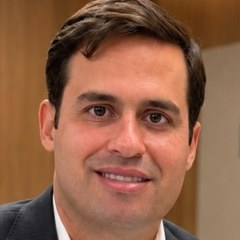

Início · Cirurgias · Pálpebras e sobrancelhas
Pálpebras e sobrancelhas: blefaroplastia e lifting de sobrancelha.
A cirurgia das pálpebras e das sobrancelhas faz parte do foco do Dr. Thomaz no rejuvenescimento facial. Aqui, o que cada cirurgia trata e o que ele já respondeu sobre o tema.

Cirurgia das pálpebras
Blefaroplastia
A blefaroplastia é a cirurgia das pálpebras. Em uma publicação sobre o tema, o Dr. Thomaz resume o que ela faz:
“[…] que remove o excesso de pele e bolsas de gordura das pálpebras […]”Instagram @dr.thomazmenezes, julho de 2025
Pálpebras superiores
Excesso de pele que pesa sobre o olhar e, às vezes, bolsas de gordura.
Pálpebras inferiores
Bolsas de gordura e excesso de pele abaixo dos olhos.
Diagnóstico
Pálpebra caída: pele ou músculo?
Nem toda pálpebra caída é só excesso de pele. Quando o músculo que levanta a pálpebra perde força, o nome é ptose palpebral, e o tratamento é outro. Por isso, a avaliação inicial separa uma coisa da outra. Foi o que o Dr. Thomaz respondeu a uma paciente:
Dermatocalázio tem como tratamento a blefaroplastia mesmo. Na avaliação inicial, caso tenha além disso uma ptose palpebral, podemos associar o tratamento desta ptose.
Resposta publicada pelo Dr. Thomaz na DoctoraliaTerço superior
Lifting de sobrancelha
Quando a sobrancelha desce com o tempo, ela também pesa sobre o olhar, e tratar só a pálpebra pode não bastar. O lifting de sobrancelha reposiciona essa região e pode ser feito junto com a blefaroplastia ou com o facelift, conforme o planejamento.
O Dr. Thomaz cita a “cirurgia das pálpebras e sobrancelhas” entre os focos da sua atuação, ao lado do deep plane facelift (apresentação na Doctoralia).
Planejamento
Junto com o rosto
Olhos, sobrancelhas, face e pescoço envelhecem juntos. No planejamento do rejuvenescimento facial, as pálpebras podem ser tratadas sozinhas ou associadas ao deep plane facelift.
O exame define o que pesa no olhar: pele, gordura, músculo ou a posição da sobrancelha. A partir daí se escolhe a cirurgia, em consulta.
Formação
Pálpebras na formação dele
A região das pálpebras aparece na formação do Dr. Thomaz desde a residência. No Hospital das Clínicas da USP, ele participou de trabalhos do grupo de cirurgia órbito-palpebral, apresentados em congressos:
- Análise retrospectiva da correção cirúrgica da ptose palpebral pelo grupo de cirurgia órbito-palpebral do HCFMUSP · 51º Congresso Brasileiro de Cirurgia Plástica, 2014
- Uso da fáscia temporal na prevenção da visibilidade e extrusão do peso de ouro no tratamento do lagoftalmo paralítico · apresentação em congresso, 2014
Fonte: currículo Lattes, via Escavador.
Dúvidas frequentes
Perguntas comuns
A blefaroplastia resolve a pálpebra caída?
Depende da causa. Quando o problema é excesso de pele, a blefaroplastia é o tratamento; quando há também ptose palpebral, o tratamento da ptose pode ser associado, como o Dr. Thomaz explicou na Doctoralia. A avaliação define.
Dá para operar as pálpebras junto com o facelift?
Em alguns casos, sim. A associação é decidida no planejamento individual, em consulta.
Como é a recuperação?
É comum ter inchaço e manchas roxas nos primeiros dias, com volta gradual às atividades. Cuidados e prazos são orientados pela equipe em cada caso.
Agende
Uma conversa para entender o seu caso.
Consultório no Centro Médico Empresarial Vitraux, sala 304, na Federação. Consultas com hora marcada, presenciais ou por vídeo.